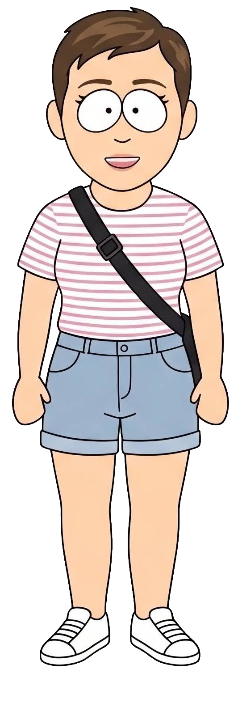
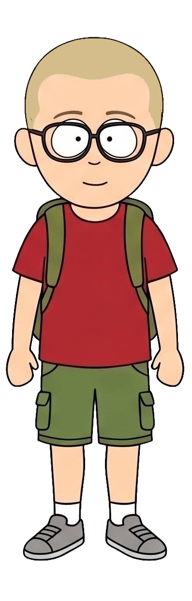

Annelies
39 jaar • Getrouwd met Ward
Annelies is leerkracht Engels en Duits en brengt die taalpassie overal mee. Als groot fan van de Britse popgroep Blue voegt ze een muzikale noot toe aan het gezin. Met haar hart voor onderwijs en gemeenschap steunt zij De Blockertjes van harte.
Ward
38 jaar • Getrouwd met Annelies
Ward is fan van hardlopen, gravelbiken, South Park en alle mogelijkheden die tech biedt. RC-cars fascineren hem, net als vragen over religie en maatschappij. Hij brengt die passies en humor mee in alles wat De Blockertjes doet.

Vic
11 jaar • Zoon van Ward en Annelies
Vic is een fanatieke gamer met snelle reflexen en een strategische mind. Op het voetbalveld staat hij als keeper scherp in doel. Of het nu in het spel of op het veld is, Vic brengt echt enthousiasme mee.
Nelle
9 jaar • Dochter van Ward en Annelies
Nelle is een creatieve geest die veel liever potlood en kwast hanteert dan voetbalschoenen. Met haar tekentalent en knutselwerk vult zij De Blockertjes met kleur en fantasie. Haar kunstwerken inspireren ons allemaal.
Heraldiek
Onze nonkel is gepassioneerd door genealogie en is volop bezig met het uitzoeken van onze familiegeschiedenis. In het verlengde daarvan dienen wij een voorstel in voor een officieel wapenschild voor onze familie De Block. Een boeiende zoektocht naar onze wortels en de symboliek die ons gezin typeert.